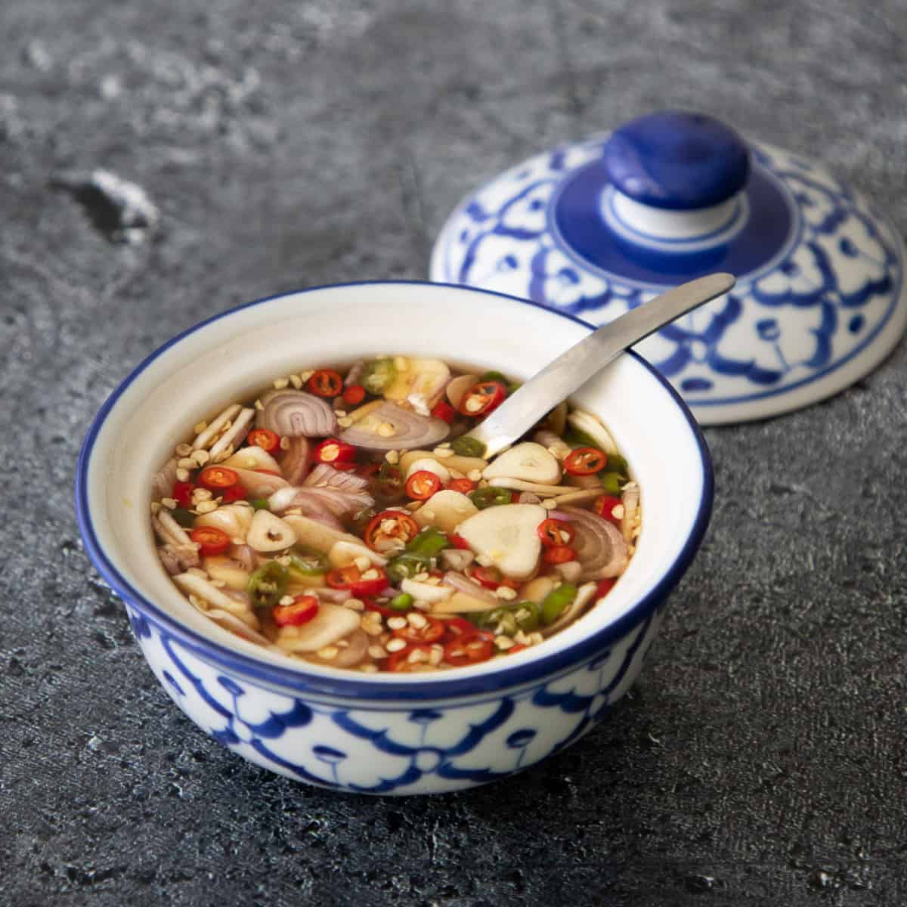

Nam Pla

Description
Nam pla is a common condiment found at many Thai food restaurants. It combines many of the
flavor combinations Thai cuisine is known for, and depending on the recipe, may actually contain
all 4 flavor categories: sweet, sour, salty, and savory.
Ingredients
- Fish Sauce
- Thai Chilis
- Lime
- Garlic
- Shallots
- Sugar (optional)
Steps
- Dice garlic, chilis and shallots finely
- Fill a small mason jar or other sealable container 3/4 full with fish sauce
- Add 2 tblsp sugar and the juice of 1 lime, stir until sugar is dissolved
- Combine with the previously diced ingredients and done